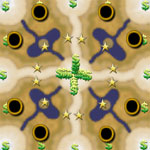
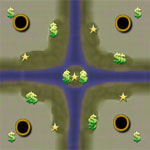
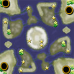
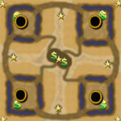
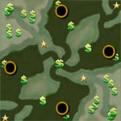
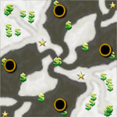

|
 |
 |
 |
 |
|
Flooded Island |
Massive Attack |
No Retreat |
Red Cross TE |
Return to |
Rocky Rampage |
Release 5 (R5) is a set of six maps for Command
& Conquer Generals Zero Hour.
Release 5 includes two brand new maps: Massive Attack and Rocky Rampage.
Also there are four maps included that are based on previous R4 maps:
Flooded Island, No Retreat, Red Cross TE, and Return to Temptation Island.
These maps have been optimized for Advanced AI Mod for C&C Generals: Zero Hour v0.98
This mod makes every game more challenging and sometimes impossible to win.
The mod works great with all maps for Zero Hour, including my R4 and R5 maps.
 |
|
 |
 |
|
Hidden Island |
Desert Trap |
Fall of Meteors |
No Surrender |
Release 4 (R4) is a set of twentyfive (!!!) maps for Command
& Conquer Generals Zero Hour.
Thirteen 4-player maps (including four modified versions), four 6-player maps,
and eight 8-player maps.
Latest maps in R4: Desert Trap, Fall of Meteors, Hidden Island, No Surrender, and Swamp Matrix.
No more maps or updates will be added to the R4 map pack.
 |
 |
 |
 | |
Land &
Sea |
 |
 |
 |
 |
 |
Any Island |
|  |  |
 |  |
 |
Anthrax Fortress |
Gravel Maze |
Desert Maze |
Urban Desert |
Urban Savanna |
 |
 |
 |
 |  |
Kuwait Craters |
Red Cross SE |
Ireland Meadows |
Winter Meadows |
R5 = Map for Zero Hour, optimized for Advanced AI Mod!
R4 = Map for Zero Hour!
R3 = Map for Generals!
New! = New map!
Hot! = This map rocks imho! ;)
Mod = Modified version of a previously released
map
Small =
Base areas are generally small. This map was not originally made for Zero Hour.
Lag! =
This map might lag your network game... :(
Release 3 (R3) is the old set of twenty (!) maps for Command
& Conquer Generals. R3 maps do not work with Zero Hour!
Twelve 4-player maps (including four modified versions), three 6-player maps,
and five 8-player maps.
No more maps or updates will be added to the R3 map pack.
> You download and install these maps at your own risk!